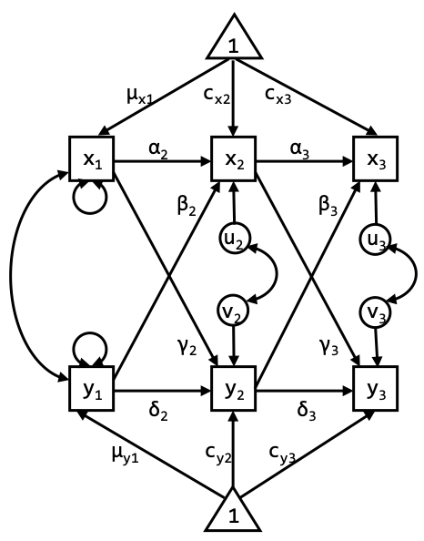
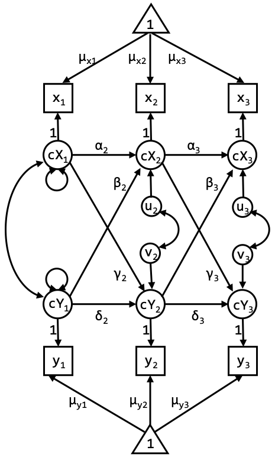

Exercises
Day 4: Trait, time lags, and measurement error
Mean structure
Specify a model in which you investigate whether the group means can be constrained across time. Tip: Allow all variables to covary with each other (i.e. specify a model without constraints on the covariance structure) such that we are estimating means, and not intercepts.
Exercise 1A
Does this model fit?
The model specification is given in exercise1A.inp on SURFdrive. The model does not fit well, according to the \(\chi^{2}\) and the RMSEA; CFI and TLI indicate a good and barely acceptable model fit, respectively. See the slides of day 1 of this summer school if you need a refresher on the recommended cutoff values for these fit indices (although such cutoff recommendations remain a hotly debated topic among statisticians).
- \(\chi^{2}\) (4) = 19.620, \(p < .001\)
- RMSEA = 0.099
- CFI = 0.986
- TLI = 0.946
Exercise 1B
What can you do to improve the model fit?
We can look at the modification indices in the output. Here, we specified MOD(4) in the OUTPUT command, which indicates all parameters that can be added/freed that will lead to a decrease in chi-square of at least 4 points (which is a significant improvement combined with 1 df).
Based on the Mplus output, it appears that freeing the mean of Dep1 leads to the largest change in chi-square (M.I. = 10.53).
Exercise 1C
Run the adjusted model and discuss the results.
Syntax for the adjusted model is in exercise1C.inp. Looking at the fit indices of the adjusted model, the chi-square for this model is still significant, but all other measures indicate the model fit is okay to excellent. Moreover, the model is a significant improvement in comparison to the previous model: \(\Delta\chi^{2} = 19.62 - 8.71 = 10.91\), with \(\Delta\)df = 1 and, \(p = .001\).
You can calculate the p-value of the \(\Delta \chi^{2}\) using the pchisq()-function in R (with the lower.tail argument set to FALSE), or an online tool
The CLPM
Exercise 2A
Specify the cross-lagged panel model (CLPM) in Mplus. Regress the observed variables directly on each other over time, as in the graph above. Try to think of where each parameter you estimate should go in the graph. Compare your model specification with the input file exercise2A.inp in SURFdrive.

Exercise 2B
Specify the model as in the graph below (the CLPM with centered latent variables), and again include the (significant) parameter estimates in this graph. Tip: Do not forget to constrain the measurement error variances of the observed variables to 0. Compare your model specification with the input file exercise2B.inp in SURFdrive.

Exercise 2C
The two models should lead to the exact same model fit. Estimate the model and discuss the model fit. When comparing the parameter estimates, what is the difference between the model in exercise 2A and the model in exercise 2B?
The CLPM with centered latent variables is, just like the CLPM from exercise 2A, a traditional CLPM, but specified in such a way that the mean structure is first separated from the regression part of the model. This implies we model the means, rather than intercepts, which makes it easier to impose the constraint of identical means over time. So, the fit indices and most parameter estimates are equivalent, except for… (see next question)
Exercise 2D
Which parameter estimates differ? How can they be related?
The difference in parameter estimates is in the means/intercepts. For the first model we estimate the means at wave 1, and intercepts thereafter. For the second model we obtain mean estimates at each wave (although they are referred to as intercepts in the Mplus output).
Again, the reason for this is that in the first model, the means at wave 2 and 3 are partly predicted by the means from previous waves (through the lagged relationships). Therefore, the constants that are estimated should be interpreted as intercepts. In the second model, the mean part (triangles) and the regression part (lagged parameters) are separated.
Exercise 2E
Constrain the means in the second version of the CLPM. Please do not constrain the mean of Dep1, however, as this constraint proved untenable in exercise 1C. Discuss the model fit.
The input for these models are in exercise2E.inp. The chi-square has increased in comparison with the previous model: The reason is that this is a restricted model (a special case of the previous model). We can test whether the increase in misfit is significant using the chi-square difference test: \(\Delta\chi^{2} = 69.59 - 62.98 = 6.61\) with \(\Delta\)df = 7 – 4 = 3, \(p = .0854\). Hence, the constraints are tenable. We can also look at information criteria such as the AIC or BIC. The model with the lowest AIC or BIC is preferred.
Exercise 2F
Continue with the model from the previous question and constrain all the lagged parameters between wave 1 and 2 to be identical to the lagged parameters between wave 2 and 3. Discuss the model fit, and compare this model to the previous one to see whether the constraint holds.
The input for these models are in CLPMalt3.inp. The chi-square has again increased in comparison with the previous model: The reason is that this is a restricted model (a special case of the previous model). We can test whether the increase in misfit is significant: \(\Delta\chi^{2} 81.52 - 69.59 = 11.93\), \(\Delta\)(df) = 11 - 7 = 4, \(p = .0178\).
If we stick to an alpha of .05, the constraints must be rejected (as the increase in misfit is significant). Note that we are doing several model comparisons here, so one could also argue that we should use a smaller alpha to guard against an inflated overall type I error. Again, an alternative would be to use information criteria for model comparisons.
The RI-CLPM
Exercise 3A
Specify the RI-CLPM for these data (without any constraints on the lagged parameters over time). Discuss the model fit.
The input for these models are in exercise3A.inp. This model fits very well; however, it only has 1 df, so it is not doing much for data reduction.
Exercise 3B
Specify the RI-CLPM with the constraints on the grand means at each occasions. Again, please do not constrain the mean of Dep1, however, as this constraint proved untenable in exercise 3.
The input for these models are in exercise3B.inp. This model has an acceptable (RMSEA, \(\chi^{2}\)) to good (CFI and TLI) fit. Comparing it to the previous model, we get a chi-square difference test of \(\Delta\chi^{2} = 9.590 - 0.84 = 8.75\), \(\Delta\)df = 4 - 1 = 3, \(p = .0328\). This implies that the constraints we impose on the means are untenable (they lead to a significant worsening of model fit). You might therefore decide to ultimately not impose these constraints. However, for didactical reasons, we continue with these constraints in place in the next exercise.
Exercise 3C
Add the constraints on the lagged parameters to the previous model.
The input for these models are in exercise3C.inp. This model fits okay (depending on the measure). Comparing it to the previous model, we get \(\Delta\chi^{2} = 19.74 - 9.59 = 8.15\), \(\Delta\)df = 8 - 4 = 4, \(p = .0379\). Again, this implies that constraining the lagged effects to be time-invariant is untenable (it leads to a significant worsening of model fit).
Exercise 3D
Compare all the models so far simultaneously, using the AIC and BIC. Which model is selected?
Based on the AIC, the RI-CLPM without any constraints provides the closest fit to the data, followed by the two other RI-CLPMs (and the adjusted means model). Based on the BIC, the RI-CLPM with constraints on the means and the lagged parameters is superior to the other models.
| Exercise | Input file | AIC | BIC |
|---|---|---|---|
| 1 | exercise1A.inp | 9451 | 9543 |
| 3 | exercise1C.inp | 9442 | 9538 |
| 6 | exercise2A.inp and exercise2B.inp | 9494 | 9586 |
| 7 | exercise2E.inp | 9495 | 9575 |
| 8 | exercise2F.inp | 9499 | 9563 |
| 9 | exercise3A.inp | 9438 | 9541 |
| 10 | exercise3B.inp | 9441 | 9533 |
| 11 | exercise3C.inp | 9443 | 9518 |